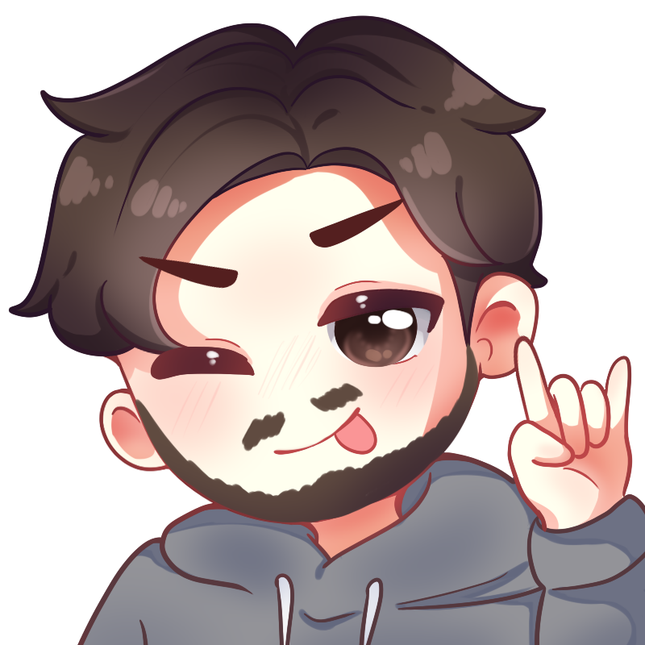
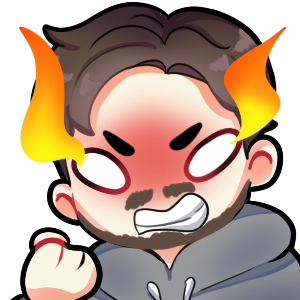
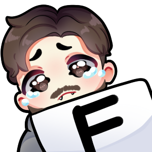

Creación de ilustraciones y emotes personalizados para la plataforma Twitch. Cada pieza es diseñada desde cero en Procreate y finalizada en Photoshop, cuidando la expresividad, la identidad visual del canal y los formatos oficiales requeridos por la plataforma.

Ilustración de perfil estilo chibi diseñada para representar la identidad visual del canal de Twitch. Incluye expresión característica y paleta de colores personalizada.

Emote de enojo con llamas diseñado para expresar frustración en el chat. Optimizado en tamaño para los formatos requeridos por Twitch (28px, 56px, 112px).

Emote de derrota o tristeza para reaccionar en el chat ante momentos difíciles. Diseñado con expresividad chibi y exportado en los formatos oficiales de Twitch.